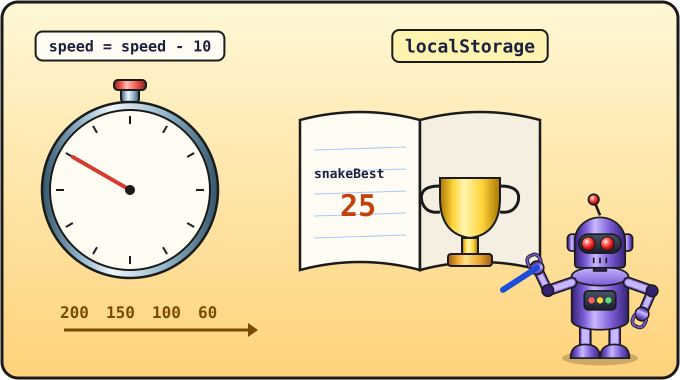
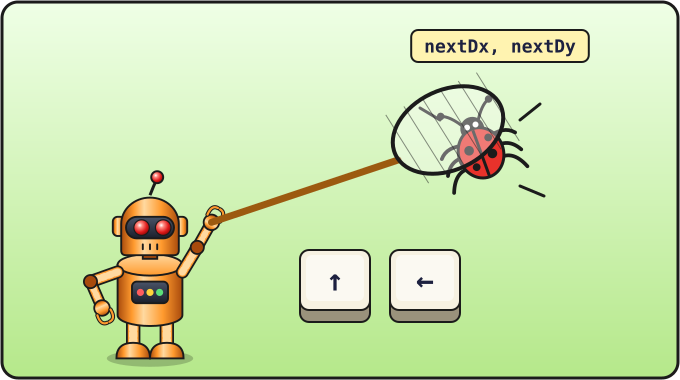

Lesson 14 of 16 ⏱ 55 minutes
Speed and high score
The game works, but it's a bit too calm. Today the snake will speed up after every apple, the game will learn to remember your best score even after the computer is switched off, and we'll catch one sneaky bug.
- make the snake speed up;
- save the high score in the browser's memory with
localStorage; - find and fix the quick-reverse bug.
| 15 min | The speed goes up |
| 20 min | The high score and localStorage |
| 15 min | Bug hunt |
| 5 min | Play for a high score! |

speed = speed - 10. And the high score goes into the browser's notebook, localStorage, where it stays.1. The speed goes up
Right now the timer always fires every 200 milliseconds. Let's put that number in a variable called speed. Really it's the pause between steps: the smaller the number, the faster the snake.
Add the variable at the top, with the others:
let gameOver; let timer; let speed;
In startGame set the starting speed and use it in the timer:
gameOver = false; speed = 200; showScore(); placeApple(); draw(); timer = setInterval(step, 200); timer = setInterval(step, speed); }
And when the snake eats an apple, we'll shorten the pause by 10 milliseconds. A timer's speed can't be changed while it's running, so we switch off the old timer and start a new, faster one:
if (head.x === apple.x && head.y === apple.y) {
score = score + 1;
showScore();
placeApple();
if (speed > 60) {
speed = speed - 10;
clearInterval(timer);
timer = setInterval(step, speed);
}
} else {
snake.pop();
}
The check speed > 60 stops the game from reaching an impossible speed: the snake won't go faster than 60 milliseconds per step.
2. The high score
When the page is refreshed or closed, all variables disappear: the program starts again. But we want to remember the high score forever! For that the browser has its own little memory — localStorage. It's like a notebook where you can write down a value under a name:
localStorage.setItem("snakeBest", 25); // write
localStorage.getItem("snakeBest"); // read
Notes in this notebook stay even if you close the browser and switch off the computer.
A place for the high score on the page
<p>Score: <span id="score">0</span></p> <p>Score: <span id="score">0</span> | Best: <span id="best">0</span></p>
Reading the high score at the start
Add a variable at the top:
let best = Number(localStorage.getItem("snakeBest"));
The localStorage notebook keeps everything as text, but we need a number to compare with. Number(...) turns text into a number. If there's no high score yet, getItem returns null ("nothing"), and Number(null) is 0. Just what we need!
Showing it and saving it
Let showScore show both numbers:
function showScore() {
document.getElementById("score").textContent = score;
document.getElementById("best").textContent = best;
}
And in endGame, right after clearInterval(timer);, we'll check whether the high score has been beaten:
function endGame() {
gameOver = true;
clearInterval(timer);
if (score > best) {
best = score;
localStorage.setItem("snakeBest", best);
showScore();
}
...
Play, score a few points and lose. Then close the tab and open the game again: the high score is still there! 🏆
localStorage.removeItem("snakeBest") and refresh the page.

nextDx, nextDy net catches the bug.3. Bug hunt
Programmers call a mistake in a program a bug. Try this experiment: let the snake crawl right. Now very quickly, almost at the same moment, press ↑ and then ←. Sometimes the snake dies out of nowhere! Why?
Let's work it out step by step. Two keys were pressed between two of the snake's steps:
- ↑: the snake is crawling right,
dyisn't 1, so turning is allowed. Nowdx = 0, dy = -1. But the snake hasn't moved yet! - ←: we check
dx !== 1.dxis already 0, so it's allowed. Nowdx = -1. - The step comes: the snake, which was really crawling right, takes a step left — straight into its own neck.
The fix: we'll remember the pressed key as the next direction, and only change the real direction at the start of a step. The checks will use the real direction.
Add two more variables at the top:
let dx; let dy; let nextDx; let nextDy;
In startGame give them starting values, next to dx and dy:
dx = 1; dy = 0; nextDx = 1; nextDy = 0;
At the very start of step we apply the next direction:
function step() {
dx = nextDx;
dy = nextDy;
let head = { x: snake[0].x + dx, y: snake[0].y + dy };
And in onKey we only change nextDx and nextDy (the checks stay the same):
function onKey(event) {
if (event.key === "ArrowUp" && dy !== 1) {
nextDx = 0;
nextDy = -1;
}
if (event.key === "ArrowDown" && dy !== -1) {
nextDx = 0;
nextDy = 1;
}
if (event.key === "ArrowLeft" && dx !== 1) {
nextDx = -1;
nextDy = 0;
}
if (event.key === "ArrowRight" && dx !== -1) {
nextDx = 1;
nextDy = 0;
}
if (event.key === " " && gameOver) {
startGame();
}
}
Now in our example the second key, ←, is checked against the real direction: dx is still 1 (the snake is crawling right), so turning left is not allowed. Bug caught! 🐞
- Tune the speed-up to your taste: maybe shorten the pause by 5 instead of 10? Or make 80 the fastest?
- When the high score is beaten, make another message appear under the others in
endGame: "New high score!". - ⭐ Add a "golden" apple: with a small chance (
Math.random() < 0.2) the apple turns golden and is worth 5 points. Hint: add agoldproperty to theappleobject with the valuetrueorfalse.
📄 The whole snake.html file after this lesson
<!DOCTYPE html>
<html>
<head>
<meta charset="utf-8">
<title>Snake</title>
</head>
<body>
<h1>Snake</h1>
<p>Score: <span id="score">0</span> | Best: <span id="best">0</span></p>
<canvas id="game" width="400" height="400"></canvas>
<script>
let canvas = document.getElementById("game");
let ctx = canvas.getContext("2d");
let size = 20;
let cells = 20;
let snake;
let apple = { x: 0, y: 0 };
let dx;
let dy;
let nextDx;
let nextDy;
let score;
let gameOver;
let timer;
let speed;
let best = Number(localStorage.getItem("snakeBest"));
function clearField() {
ctx.fillStyle = "black";
ctx.fillRect(0, 0, 400, 400);
}
function drawCell(x, y, color) {
ctx.fillStyle = color;
ctx.fillRect(x * size, y * size, size - 1, size - 1);
}
function randomCell() {
return Math.floor(Math.random() * cells);
}
function isOnSnake(x, y) {
for (let i = 0; i < snake.length; i++) {
if (snake[i].x === x && snake[i].y === y) {
return true;
}
}
return false;
}
function showScore() {
document.getElementById("score").textContent = score;
document.getElementById("best").textContent = best;
}
function placeApple() {
apple.x = randomCell();
apple.y = randomCell();
while (isOnSnake(apple.x, apple.y)) {
apple.x = randomCell();
apple.y = randomCell();
}
}
function draw() {
clearField();
drawCell(apple.x, apple.y, "red");
for (let i = 0; i < snake.length; i++) {
drawCell(snake[i].x, snake[i].y, "lime");
}
drawCell(snake[0].x, snake[0].y, "yellow");
}
function endGame() {
gameOver = true;
clearInterval(timer);
if (score > best) {
best = score;
localStorage.setItem("snakeBest", best);
showScore();
}
ctx.fillStyle = "white";
ctx.font = "32px sans-serif";
ctx.textAlign = "center";
ctx.fillText("Game over", 200, 200);
ctx.font = "18px sans-serif";
ctx.fillText("Press Space to play again", 200, 240);
}
function step() {
dx = nextDx;
dy = nextDy;
let head = { x: snake[0].x + dx, y: snake[0].y + dy };
if (head.x < 0 || head.x >= cells || head.y < 0 || head.y >= cells) {
endGame();
return;
}
if (isOnSnake(head.x, head.y)) {
endGame();
return;
}
snake.unshift(head);
if (head.x === apple.x && head.y === apple.y) {
score = score + 1;
showScore();
placeApple();
if (speed > 60) {
speed = speed - 10;
clearInterval(timer);
timer = setInterval(step, speed);
}
} else {
snake.pop();
}
draw();
}
function onKey(event) {
if (event.key === "ArrowUp" && dy !== 1) {
nextDx = 0;
nextDy = -1;
}
if (event.key === "ArrowDown" && dy !== -1) {
nextDx = 0;
nextDy = 1;
}
if (event.key === "ArrowLeft" && dx !== 1) {
nextDx = -1;
nextDy = 0;
}
if (event.key === "ArrowRight" && dx !== -1) {
nextDx = 1;
nextDy = 0;
}
if (event.key === " " && gameOver) {
startGame();
}
}
function startGame() {
snake = [
{ x: 10, y: 10 },
{ x: 9, y: 10 },
{ x: 8, y: 10 }
];
dx = 1;
dy = 0;
nextDx = 1;
nextDy = 0;
score = 0;
gameOver = false;
speed = 200;
showScore();
placeApple();
draw();
timer = setInterval(step, speed);
}
document.addEventListener("keydown", onKey);
startGame();
</script>
</body>
</html>
Check yourself
- I understand why the timer has to be restarted to change the speed.
- I know that
localStorageremembers values after the browser is closed. - I can explain how the reverse bug happened and how we fixed it.